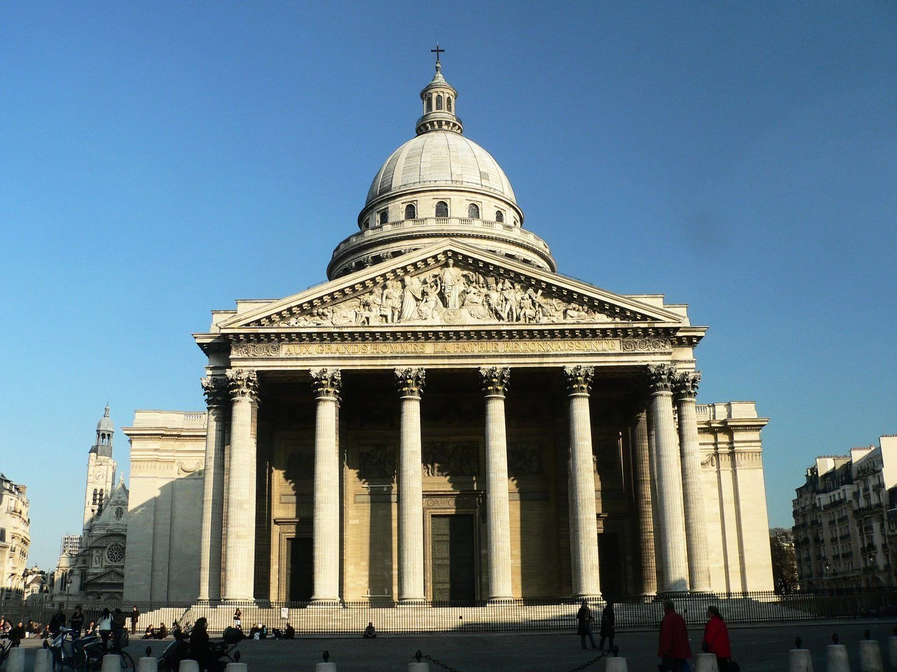

برج إيفل

برج إيفل هو برج حديدي يبلغ ارتفاعه 324 مترا، يوجد في باريس بالقرب من نهر السين
ومنذ تم الانتهاء من هذا البناء، أصبح قبلة العديد من العلماء والمهندسين والباحثين ليستخدموه في إجراء التجارب المختلفة، سواء كانت متعلقة بالطقس أو سقوط الأجسام الحرة أو الرصد وغيرها من الاستخدامات. وفي عام 1909 م تم بناء نفق هواء من أجل القيام ببعض الأبحاث العلمية
يوجد في البرج مطعمان يوفران خدماتهما للزوار ويتيحان رؤية بانورامية لمدينة باريس
قوس النصر

قوس النصر هو قوس يقع على رأس طريق الشانزلزيه بباريس في فرنسا وهو طريق مزين بالأشجار
يعتبر القوس وُجهَة سياحية مهمة للسياح في باريس ونستطيع الصعود إلى سطحه ببطاقة نأخذها من الطابق السفلي الذي نستطيع أن نصل إليه من نفق خاص من شارع الشانزليزيه
البانثيون في باريس

مقبرة العظماء أو البانثيون هي مبنى بالحي اللاتيني في باريس يضم رفات بعض عظماء الفرنسيين
تم بناؤه ليكون كنيسة لسانت جينيفيف، تقع في الدائرة الخامسة في باريس في مونتانيي سانت جانفيف. البانتيون يطل على كافة أرجاء باريس. كان مصممه جاك جيرمان لديه نية الجمع بين خفة وسطوع الكاتدرائية القوطية مع المبادئ الكلاسيكية
سراديب الموتى

سرداب الموتى في باريس أو كاتاكومب باريس هي سراديب للموتى في مدينة باريس في فرنسا وهي عبارة عن مقبرة لعظام الموتي تحت الأرض وتضم رفات ما تقرب من 6 ملايين شخص. ويطلق عليها أكبر مقبرة في العالم
تم نقل بقايا عظام 6 ملايين إنسان إلى داخل هذه السراديب مابين آواخر القرن الثامن عشر وأواسط القرن التاسع عشر لتشكّل بذلك واحدة من أغرب الأماكن التي أنشأها الإنسان على الأرض يمكن زيارتها
متحف اللوفر

متحف اللوفر من أهم المتاحف الفنية في العالم، ويقع على الضفة الشماليَّة لنهر السين في باريس . يعد متحف اللوفر أكبر صالة عرض للفن عالمياً وبه العديد من مختلف الحضارات الإنسانية، وبالمتحف توجد اللوحة الشهيرة الموناليزا للرسام ليوناردو دا فينشي
وخلال الثورة الفرنسية أعلنت الجمعية الوطنية أن اللوفر ينبغي أن يكون متحفاً قومياً لتعرض فيه روائع الأمة. ليفتتح المتحف في 10 أغسطس 1793. ويعدّ اللوفر أكبر متحف وطني في فرنسا وأكثر متحف يرتاده الزوار في العالم. خضع في عهد الرئيس الفرنسي الراحل فرنسوا ميتيران إلى عمليات إصلاح وتوسعة كبيرة
متحف أورسيه

هو متحف في باريس بفرنسا على الضفة الغربية لنهر السين. ومقره محطة سابقة للسكة الحديد في العاصمة الفرنسية
يحوي المتحف في معظمه أعمال من الفن الفرنسي. تؤرخ منذ 1848 حتى 1915 بما فيها لوحات، منحوتات، أثاث وصور الفن الرفيع الفوتوغرافية. ولعل أشهر مايحويه النفائس والقطع النادرة للوحات الفن الانطباعي لفنانين من المشاهير أمثال كلود مونيه ورونوار.